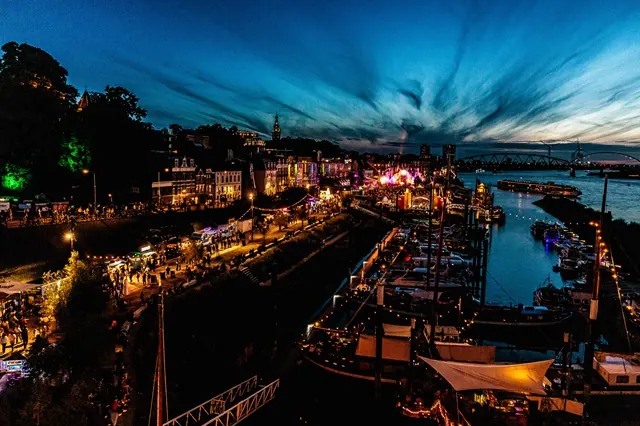

Nieuws ·
Vierdaagsefeesten Nijmegen genomineerd voor de Nationale Evenementenprijs

Nominaties Nationale Evenementenprijzen bekend
Deze week heeft de jury de nominaties vastgesteld. In de categorie ‘Evenementenstad van het jaar’ zijn Alkmaar, Tilburg en Valkenswaard uitverkoren. In de running voor de titel ‘Beste Publieksevenement’ zijn Big Rivers Festival, De Grote Schijn en de Vierdaagsefeesten Nijmegen.
Binnenkort presenteren de genomineerden zich met een pitch aan de jury. Deze bepaalt vervolgens de winnaars. Bij de uiteindelijke beoordeling worden inhoudelijke elementen als visie, aanpak, toegankelijkheid, samenwerking met stakeholders en maatschappelijke relevantie voor de stad meegewogen.
De jury van de Nationale Evenementenprijs
De jury van de Nationale Evenementenprijzen staat onder leiding van Johan Moerman (voormalig directeur Rotterdam Festivals) en kent daarnaast de leden: Demelzha Blinker, Willem Westermann en Marianne Dijkshoorn. De jury wordt aangevuld door roulerende leden namens de winnaars in de categorieën Evenementenstad van het Jaar en Beste Publieksevenement 2023. Dit jaar zijn dit Kevin Rouwette (wethouder Valkenburg aan de Geul), Bob van der Kolk (Evenementencoördinator Almere City Marketing) en Egbert Lassche (corso Sint Jansklooster). Daarnaast neemt een jaarlijks wisselende student namens een van de hogescholen met een evenementenopleiding plaats in de jury. Dit jaar is dat Jip Cornelissen van de Fontys Hogeschool.
Nationaal Congres Evenementen
Dit jaar worden de Nationale Evenementenprijzen voor de 19de keer uitgereikt. Sinds 2014 gebeurt dat tijdens het Nationaal Congres Evenementen, dat dit jaar op maandag 8 april 2024 plaatsvindt in Valkenburg aan de Geul.
Thema dit jaar is ‘Evenementen, waar doen we het voor?’ Door corona weten we dat het welzijn van mens (en vooral jongeren) achteruit holt zodra er geen evenementen meer zijn. De coronacrisis hebben we weliswaar achter ons gelaten, maar de uitdagingen in het evenementen-landschap zijn er niet minder op geworden. Hogere kosten, terugtrekkende hulpdiensten, personeelstekorten, gebrek aan vrijwilligers, strengere vergunnings- en veiligheidseisen en een hele trits aan maatschappelijk belangrijke thema’s.
Voor meer informatie, overzicht van de juryleden, het programma nationaal congres evenementen en aanmelden: Nationaalcongresevenementen.nl.